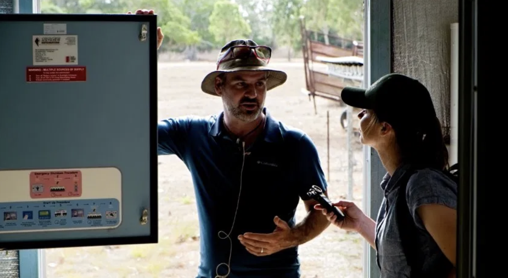
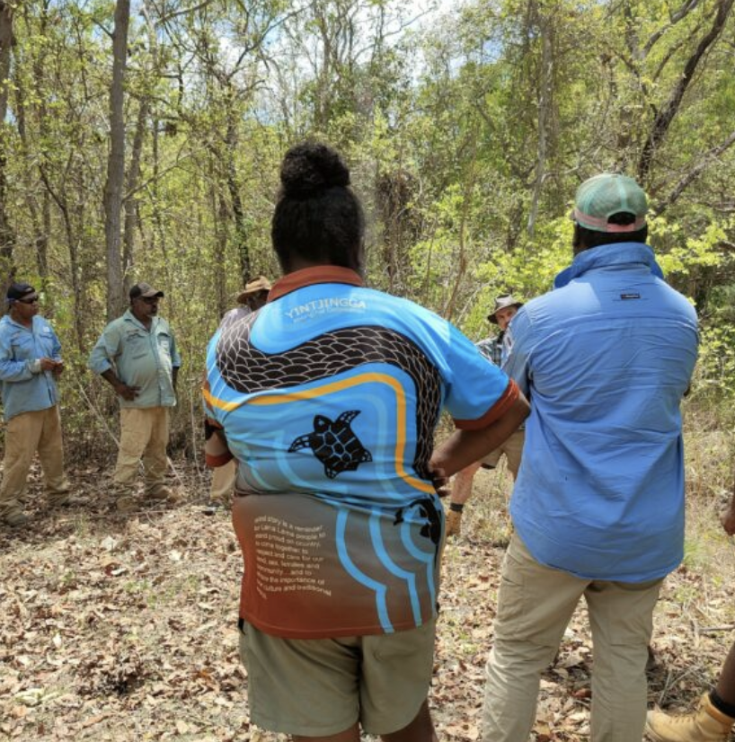
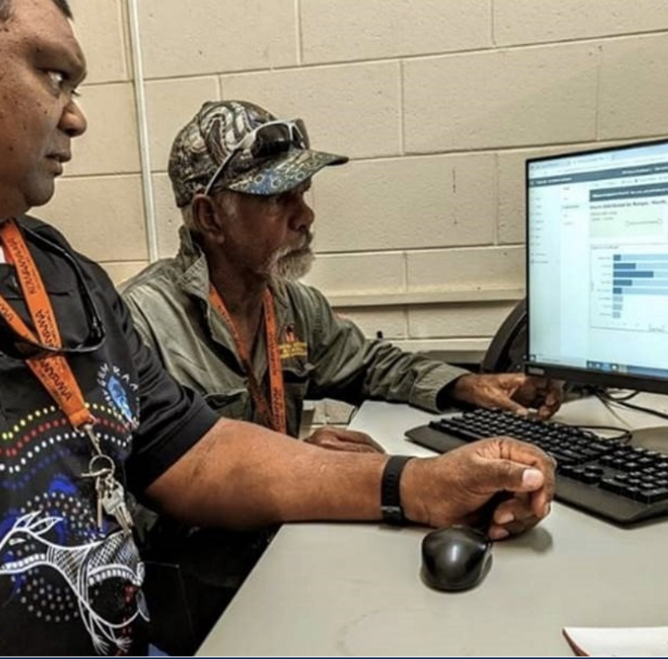
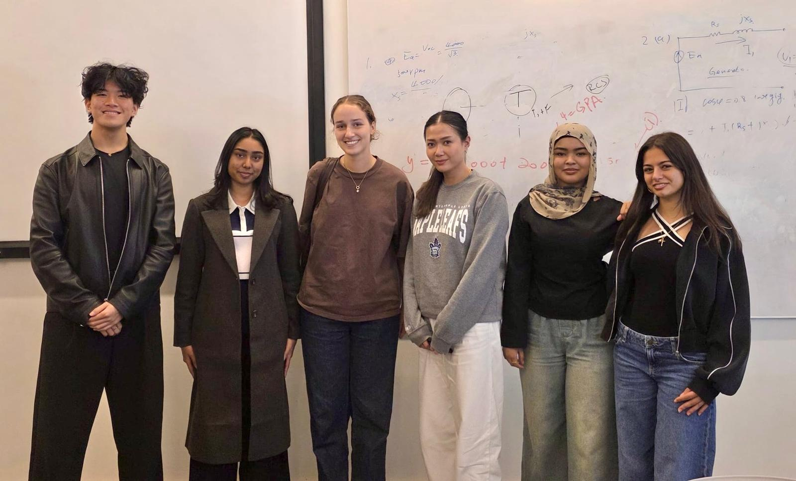

Ranger operations
Rangers monitor and care for Country every day — from environmental sampling to fire management. Reliable power is what keeps their radios, GPS units and field equipment running.
A low-cost energy monitoring and fault diagnosis system designed in partnership with the Lama Lama Peoples of Port Stewart, Queensland.
We acknowledge the Gadigal People of the Eora Nation, the Traditional Custodians of the land on which we gather, and pay our respects to their Elders past, present and emerging. We recognise their enduring connection to land, waters, and community, and the cultural knowledge they continue to share.
We also extend our respect to the Lama Lama Peoples of Port Stewart, Queensland, with whom we are undertaking this project in partnership with, and recognise their deep connection to Country. We are grateful for the opportunity to learn from and work alongside them, and we approach this work with respect, responsibility and cultural sensitivity.
This project addresses the lack of sufficient and effective energy fault diagnosis systems on Lama Lama Country in Port Stewart, Queensland (Engineers Without Borders [EWB], 2024). The Lama Lama community relies on off-grid solar energy systems to power essential services (Ergon Energy, 2023); however, these systems are vulnerable to faults caused by harsh tropical conditions. Due to the remoteness of the region and limited supervision of infrastructure, faults often go undetected (Mahmud & Roy, 2025) until major disruptions occur, impacting critical services such as food storage, medical equipment, education and ranger operations.
Through extensive research and analysis, Team 7 identified that current fault diagnosis methods are ambiguous, non-user friendly, and can result in misdiagnosis (Mahmud & Roy, 2025). To address this challenge, the team proposes a low-cost, durable, and easy-to-use SMS-based fault alert system, that doesn't require specialist technical knowledge. The proposed design aims to improve energy reliability, reduce downtime, and support the long-term sustainability and wellbeing of the Lama Lama community.
Approximately AUD $3,500
for the first installation of one unit
Lama Lama Country lies on the eastern side of Cape York Peninsula in Far North Queensland — a remote, biodiverse landscape of coastal plains, wetlands and tropical savannah. The Lama Lama Peoples have cared for this Country for tens of thousands of years.

When the power goes down on Country, it isn't just the lights. It's the freezer, the radio, the ranger station, the school. Reliability isn't a feature — it's a responsibility.

Rangers monitor and care for Country every day — from environmental sampling to fire management. Reliable power is what keeps their radios, GPS units and field equipment running.

Solar power supports the things people can't go without: medical equipment, food refrigeration, and access to communication. A single unplanned outage can ripple across the community for days.

During the wet season, road access is cut off for months at a time. When systems fail, help is hours or days away — making early detection and local repair the difference between disruption and disaster.
Listening first. Understanding life, Country and energy use on Lama Lama land.
→Framing the gap in fault diagnosis with clear, community-grounded problem statements.
→Generating, weighing and testing concepts against cost, durability and usability.
→A monitoring system built for tropical climates, wildlife and non-specialist users.
→Cost breakdown, funding pathway and the case for long-term sustainability.
→Five rollout stages — from consultation through to end-of-life maintenance.
→Supporting documents, prototype evidence and an interactive glossary.
→References, APA 7th Style.
→A multidisciplinary student team from the Faculty of Engineering, working together through the Engineers Without Borders (EWB) Challenge to develop a human-centred response to Research Area 3.4.
Each of us brought a different perspective — from electronics and materials to community engagement and design — and every decision on this site reflects that shared work. We approached the project with respect for the Lama Lama Peoples' deep knowledge of Country and a genuine commitment to designing alongside them, not for them.

AGM · 2026